Induction Heater & Efficiency Bench
A low-voltage, series-resonant induction heating prototype designed for rigorous calorimetric efficiency measurements, combining electromagnetic wave theory and thermodynamics.
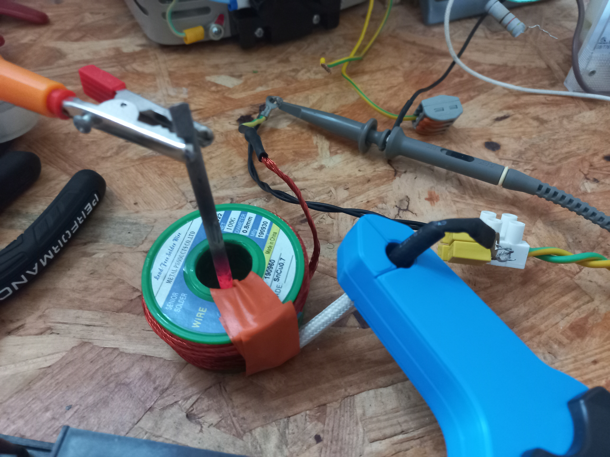
Overview & Objectives
Before entering engineering school, I completed two years of preparatory classes (PCSI then PC: Physics, Chemistry, Mathematics and Engineering Sciences). At the end of this curriculum, students present their TIPE (Supervised Personal Initiative Projects) before a jury—an independent research project based on a national theme (in my case, "Transition, transformation, conversion"). My project focused on induction heating systems and establishing rigorous protocols to measure their conversion efficiency.
An induction heater uses high-frequency electromagnetism to heat conductive materials directly through eddy currents and hysteresis losses without physical contact. Because of my prior experience with switching converters, the electrical design was straightforward, allowing me to focus on applying physics concepts studied in prepa (EM wave theory, magnetostatics, resonant circuits, and thermodynamics) and rigorous lab protocols from chemistry lab work (such as calorimetric balance).
To ensure safety and compatibility with school lab equipment, the prototype was engineered to operate cleanly on a standard lab bench power supply (0–30V, 10A DC), avoiding hazardous mains voltages during student testing.
Safety & Lab Notice
High-frequency alternating current and high currents through inductive work coils generate intense magnetic fields capable of heating metallic objects instantly. Although operating on a low 30V DC rail, proper thermal isolation and current limits are vital to prevent component burnout.
System Architecture & Specifications
| Parameter / Subsystem | Specification & Details |
|---|---|
Operating Topology |
Full H-bridge driving a Series LC Resonant Tank |
Power Switches |
4× IRFP3205 N-Channel Power MOSFETs (55V, 110A, TO-220) |
Operating Voltage & Power |
0–30V DC adjustable bench supply; tested up to ~180W |
Operating Frequency Range |
30 kHz to 150 kHz (manually driven via external signal generator) |
Work Coil |
~50 turns of Litz wire, ~140 µH inductance |
Bus Decoupling |
8 µF film capacitor placed in parallel directly across the bridge input |
Peak measured efficiency |
η=66.9% (20V, 55W, fr = 111 Khz) |
Design Choices
To generate high-frequency magnetic fields, direct current is converted into alternating current and fed through a work coil. These circuits employ LC resonant tanks to maximize efficiency, enable soft switching (ZCS/ZVS), and achieve current amplification.
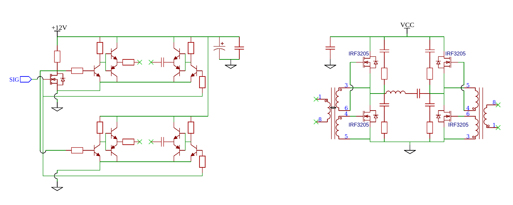
1. Series vs. Parallel Resonant Topology
A parallel resonant converter consists of a current-fed topology driving a high-impedance parallel tank, whereas a series resonant converter is a voltage-fed topology driving a low-impedance series tank.
The induction heater was built with specific goals and limitations in mind (low heat dissipation, 55V limit for the mosfets) and choosing the right configuration is crucial to accommodate for those. I settled on a Series Resonant Configuration rather than a parallel setup for two key reasons:
- Voltage Stress: Parallel resonant converters produce violent voltage spikes that easily exceed 55V, which would instantly destroy low-voltage MOSFETs. Series circuits clamp the switch voltage tightly to the DC supply rail.
- Internal Heating: Parallel circuits trap massive circulating currents inside the LC tank loop, heating up the coil and capacitors (I²R). Series circuits avoid this trapped loop, drastically reducing internal component heating.
2. Power Stage & Component Selection
MOSFET Upgrade: While initially testing with IRFZ44N FETs, continuous operation caused thermal buildup requiring active cooling. To minimize switching and conduction losses—ensuring they did not distort efficiency measurements—I switched to IRFP3205 MOSFETs. Their extremely low on-resistance (Rds(on) = 8mΩ) limits conduction losses to under 1.6W at 10A (assuming moderate temperature), compared to 3.6W for IRFZ44N or 8W+ for IGBTs or BJTs.
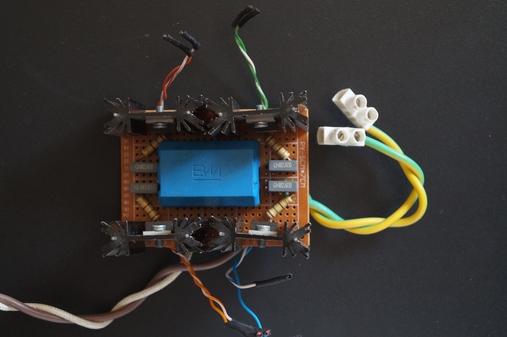
Snubber Network & Bus Capacitance: Because the IRFP3205 is rated for 55V and the supply runs at 30V, robust snubbers were required. I placed an individual RC snubber (6.8 nF capacitor in series with a 15Ω resistor) across each individual FET. Additionally, to counteract the power supply internal resistance causing the bridge output voltage to "cave in" at resonance peak current, an 8 µF film capacitor was placed directly across the bridge input.
3. Controller Board & Gate Drivers
The bridge is driven by two 1:1:1 Gate Drive Transformers (GDTs) controlled by a custom signal amplifier board. Each amplifier stage level-shifts the 0–5V signal generator output to 0–12V, feeding two push-pull amplifier pair (2N2222A and 2N2907A) connected to the GDT primary (with a 1 µF series DC-blocking capacitor).
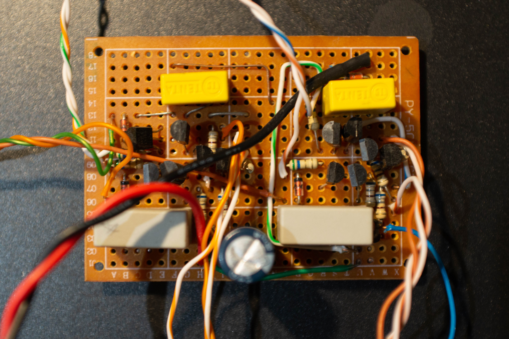
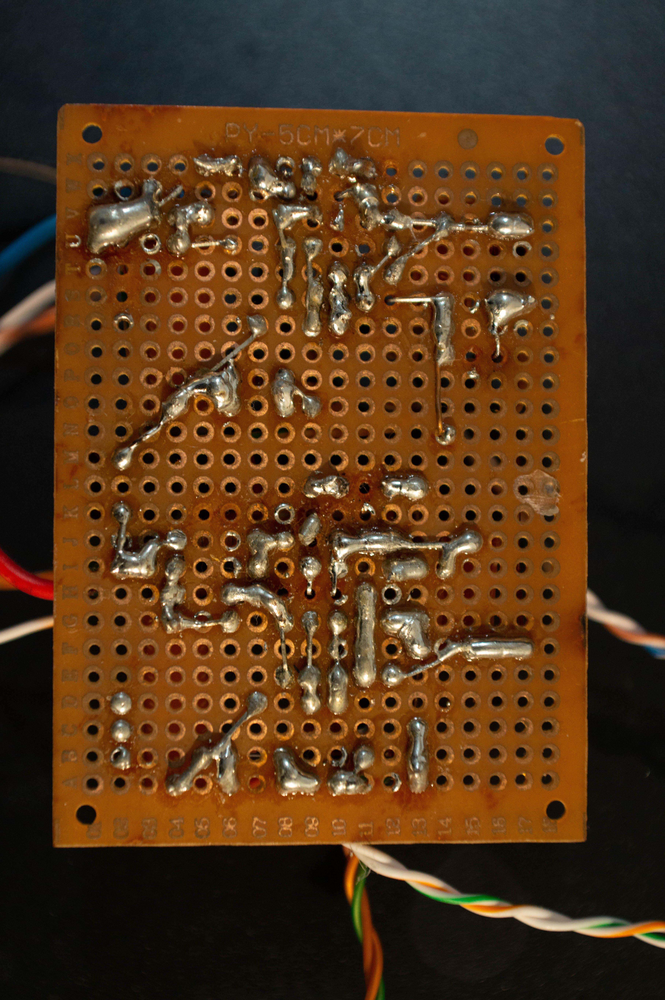
Layout & Construction
Main Circuit & Modularity
The H-bridge and dual GDTs were housed compactly inside a 10 by 10 junction box, with the controller board securely mounted to the side. The prototype was designed for complete modularity: the LC tank components and work coil can be easily detached and distanced from the electronics. This was crucial since the work coil had to be placed inside a calorimeter while the electronics remained outside.
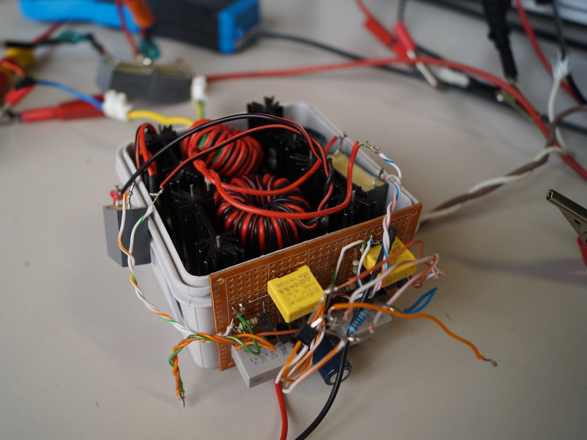
Work Coil
To maximize the magnetic field at low supply currents, I used a high-inductance work coil (~140 µH, ~50 turns) wound with Litz wire salvaged from an induction stove. At high frequencies, AC current suffers from the skin effect, crowding near the outer conductor boundary. Litz wire's bundled, insulated strands force current to utilize the full copper cross-section, minimizing high-frequency resistance.
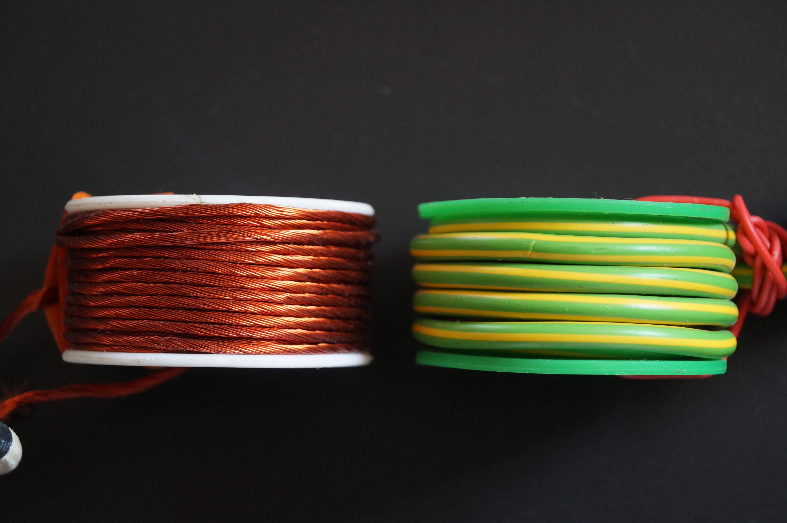
Results & Lab Protocol
Frequency Tuning & Resonance Detection
Operating frequency is manually dialed on the signal generator. Resonance can be identified by probing the bridge output and comparing it with tank current: at resonance, current peaks and is exactly in phase with the bridge voltage. Alternatively, a loose pickup wire placed near the work coil can detect the strong high-frequency E-field on an oscilloscope.
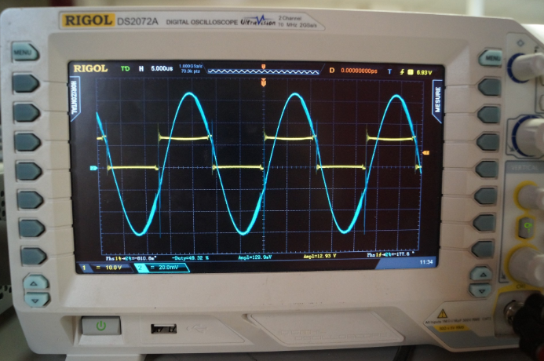
Manually tuning slightly above the resonant frequency forces an inductive mode that enables Zero-Voltage Switching (ZVS), eliminating switching losses and maximizing efficiency.
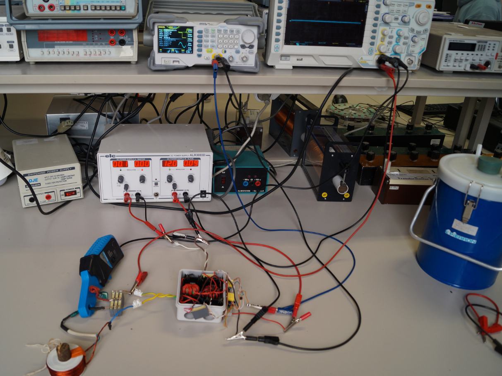
Calorimetric Efficiency Protocol
Efficiency was defined as the ratio of thermal energy transferred to the metallic load over total electrical energy consumed by the device:
η = E_thermal / E_electrical
Electrical consumption was tracked by recording the power at regular intervals over the duration of the test run, plotting it over time P(t), and integrating it. To measure thermal energy accurately without heat loss to the environment or work coil, a specialized calorimeter setup was designed containing 400 ml of distilled water.
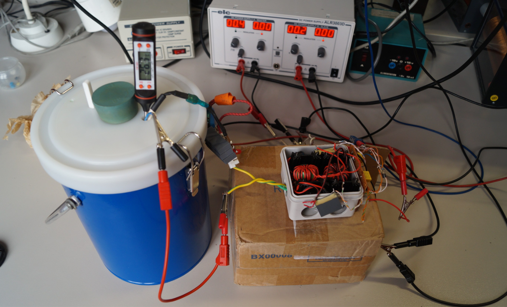
The water served two critical roles:
- Thermal Capacity & Stability: Adding 400g of water increased thermal inertia, maintaining a stable temperature profile that kept electrical load resistance (and power draw) more steady. It also minimized relative heat loss to the ambient environment.
- Uniform Heat Distribution: Without water, thermal gradients between the load, coil, and calorimeter walls distort measurements. Gentle stirring distributed heat uniformly so thermocouple readings matched water temperature accurately.
Several tests were conducted using different load materials and different resonant frequencies. Using specific heat capacity determination tests, the system heat capacity with an iron load was calculated as 207.7 joule per kelvin.
Limitations
While the prototype successfully measured conversion efficiency, several physical limitations became apparent during testing:
- Non-Ferromagnetic Metals: Due to the absence of hysteresis losses, the circuit struggled to efficiently heat non-ferromagnetic metals like brass, aluminum, or copper compared to steel/iron.
- Curie Point Capping: When heating an iron screwdriver until bright red, once it reached its Curie temperature (~770°C), it lost its ferromagnetic properties. Heating efficiency dropped, leaving only eddy currents to drive the process and causing current draw to spike while heating output capped. Prolonged temperatures over 200°C also threatened the plastic coil supports via thermal radiation.
- Manual Tuning: Manual frequency dialing via the signal generator required constant adjustment as loads heated up and shifted resonant frequency.
Updates & Next Steps
This project successfully concluded my preparatory school TIPE requirements. However, I plan to develop a higher-power induction system capable of actually melting metal and overcoming previous limitations.
Future High-Power Architecture
While the series resonant converter is ideal for controlled low-power testing, it presents challenges for high power: an empty work coil draws maximum current, risking bridge short circuits. Future designs will incorporate Over-Current Protection (OCP) and explore step-down transformers to impedance-match parallel resonant tanks.
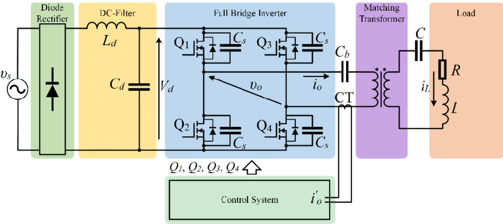
Additionally, future iterations will replace manual tuning with an automatic Phase-Locked Loop (PLL) or Zero-Current-Crossing (ZCD) feedback system to dynamically lock onto shifting resonance frequencies.
Additional Resources
Induction Heating Research
Herasymenko & Pavlovskyi (2021) - Analysis of resonant induction topologies
RC Snubber Design (TI)
Application guide for calculating and tuning power stage RC snubbers
Induction Heater Control
Current control circuit reference for high power induction heating
Method of Mixtures
Specific heat test protocol and calorimetry measurement methodology